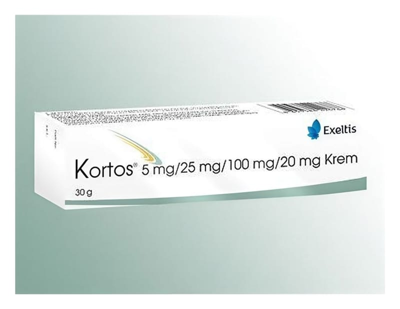

Kortos Krem, 30 g

Ne için kullanılır
KT · Bölüm 1● KORTOS®, krem formunda bir ürün olup, topikal antihemoroidler olarak adlandırılan ilaç grubuna dahildir. ● Yoğun sarı renkli, pürüzsüz yumuşak kremin her bir gramı etkin madde olarak 20 mg bizmut subgallat, 25 mg benzokain, 100 mg benzalkonyum klorür (%1 solüsyon) ve 5 mg hidrokortizon asetat içermektedir. KORTOS®, 30 gram krem içeren lamine polifoil tüp içinde kullanıma sunulmaktadır. ● KORTOS®, makatta (anüste) ağrı, şişlik, kızarıklık, kaşıntı, meme oluşumu ve kanama ile kendini belli eden hemoroid (basur) hastalığının tedavisinde kullanılır. Ayrıca yine bu bölgede meydana gelen çatlak (anal fissür) ve kaşıntının giderilmesinde de kullanılmaktadır.
- 2 -